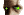
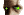

|

|
>> Содержание / Список кланов /
 Stalkers Stalkers
Зона. Так называли то, что здесь было. Реже – Проклятое место, еще реже – Последняя надежда человечества. Никто не знал, что это – потому что те, кто уходил туда, уже не возвращались.
Армия окружила Зону сплошным кордоном, но все равно находились те, кому удавалось найти щели в этом кордоне и проникнуть внутрь. Проникнуть для того, чтобы не вернуться.
***
- Я ждал вас. – сказал человек в балахоне, помолчал немного и добавил, - Мне пришлось долго ждать вас…
Их было пятеро. Бывший боксер, бывший журналист, бывший художник, бывший программист и бывший солдат. Люди с прошлым, у которых не было будущего. У каждого из них были свои причины покинуть этот мир, но просто так подыхать никто из них не собирался.
Они стояли возли небольшого узкого тоннеля, ведущего к границе Зоны и единственным препятствием для них являлся этот человек в балахоне, неизвестно откуда взявшийся и говорящий странные, непонятные слова.
- Ты кто? – спросил журналист, а боксер в это время многозначительно хрустнул пальцами.
- Неважно. – ответил незнакомец. – Важно лишь то, что вы первые.
- В смысле первые? – озадаченно спросил программист. – В чем первые?
- Вы первые из тех, кто сможет вернуться. – ответил незнакомец. – Со временем вас будет больше, но сейчас вы самые первые и я пришел для того, чтобы дать вам Слово.
- Я тебе сейчас в табло дам, если не будешь нормально базарить. – сказал боксер и сделал шаг вперед.
Незнакомец сделал странное движение и вдруг все почувствовали ауру силы, которую излучала его фигура.
- Вы будете проводниками. – сказал он. – Проводниками, которые смогут привести в новый мир других.
- Зачем нам это? – спросил солдат. – Нам бы самим прорваться.
- Вы пройдете. – сказал незнакомец. – На то есть воля Великого. И ЕГО волей вы должны стать Сталкерами.
- Кем? – угрожающе прищурился боксер.
- Сталкерами. – повторил незнакомец. – Теми, кто сможет показать дорогу в новый мир остальным. А сейчас я скажу вам Слово. По воле Великого.
Пятеро бывших переглянулись.
Они поняли друг друга без слова. Люди, еще несколько месяцев назад не знавшие друг друга, оказались достаточно сплоченной командой для того, чтобы понять друг друга с одного лишь только взгляда. Понять – и сделать то, что нужно было сделать.
Этот удар позже боксер назвал лучшим ударом за всю свою карьеру. Мощнейшим хуком кулак врезался в незнакомца, в то место, скрытое капюшоном, где по идее должна была находится челюсть. Впрочем, она там и оказалась. Незнакомец отлетел на несколько метров, ударился о стенку тоннеля и затих.
Боксер потер кулак и ухмыльнулся.
- Аура… сила... - произнес он. – Фигня всё это. Хук, он и в Зоне хук.
Художник шагнул вперед и нагнулся над незнакомцем. Посмотрел на тело, протянул было руку, чтобы откинуть капюшон, но почему-то передумал. Выпрямился, повернулся к друзьям и сказал то, о чем думали они все:
- Других приводить? Черта с два. – сказал он. – Он что, думал, что мы приведем в наш новый мир остальных и превратим его в такое же дерьмо, в котором мы жили раньше?
К нему подошел программист и положил ему на плечо руку.
- Да, брат. – кивнул программист головой. – Этот мир только для нас. Для нас и для наших друзей.
Художник криво улыбнулся и посмотрел вглубь тоннеля.
- Он ждет нас. – сказал он. – Наш новый мир ждет нас.
- Нас ждет новая жизнь. – сказал журналист. – Пойдем, братья.
И они шагнули вперед. Туда, где так далеко, и в то же время так близко был виден крохотный лучик света. Света нового мира и новой жизни.
***
- И все-таки я не могу понять людей. Сколько я их знаю, я все равно не могу их понять.
- Тебе это не надо. Ты сделал их Сталкерами – проводниками нашего мира. Пройдет время и они приведут в новый мир своих давних друзей, тех, кто остался. А те приведут своих. Все, что от нас требуется, это ждать.
- Ты поистине Великий. – произнес собеседник Великого и, шурша балахоном, склонился перед НИМ, став на одно колено и отдавая честь ЕГО мудрости.
Легкая улыбка пробежала по устам Великого.
Официальный сайт клана: http://combats.stalkers.ru
|
|
|